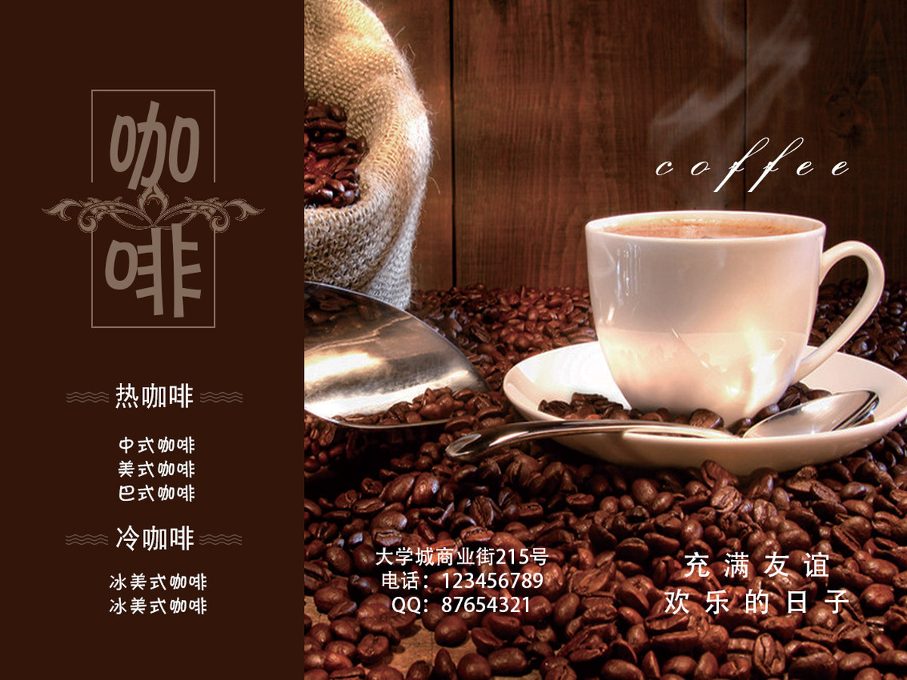
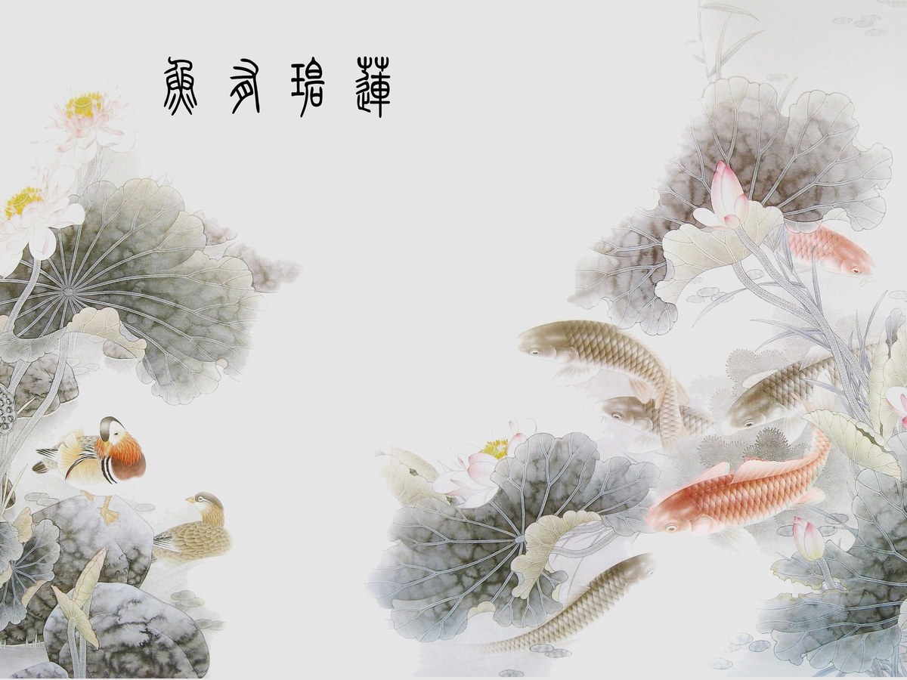
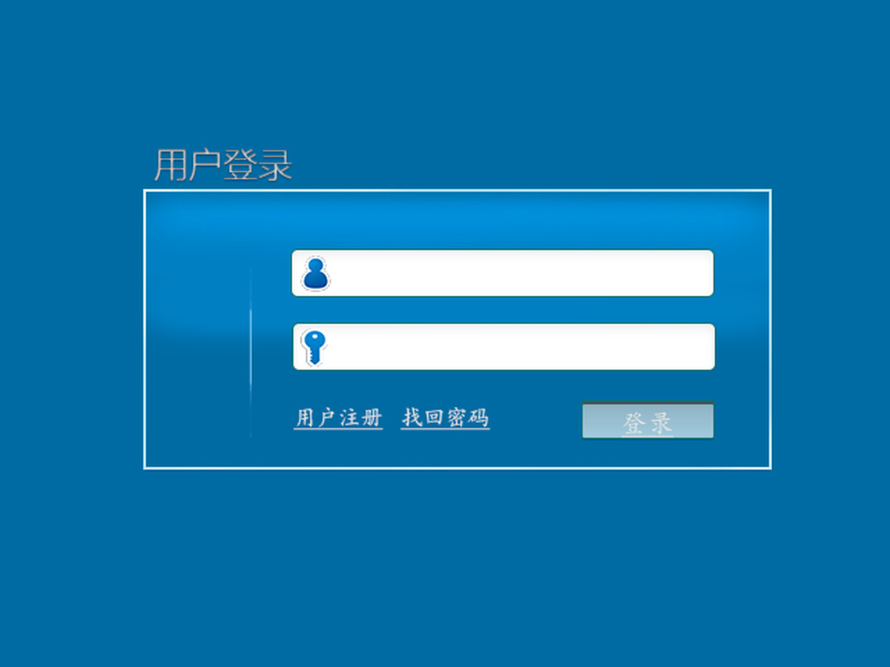
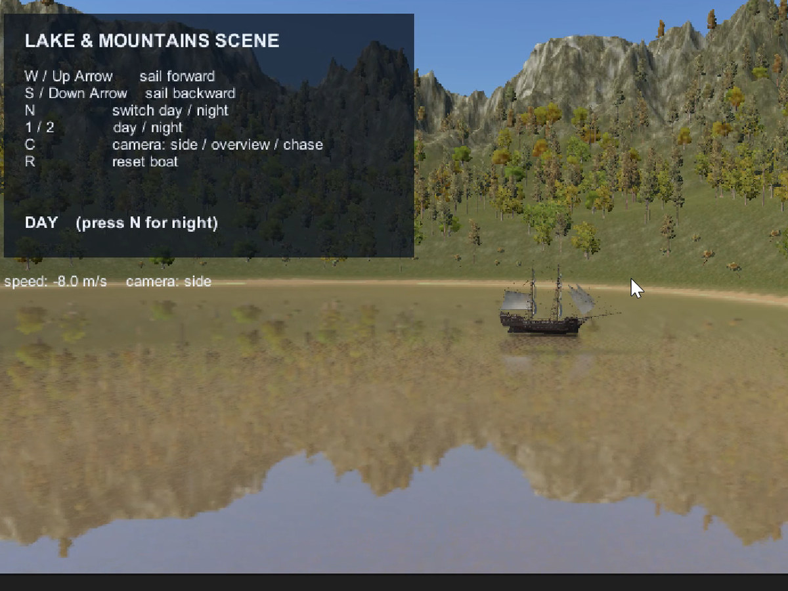
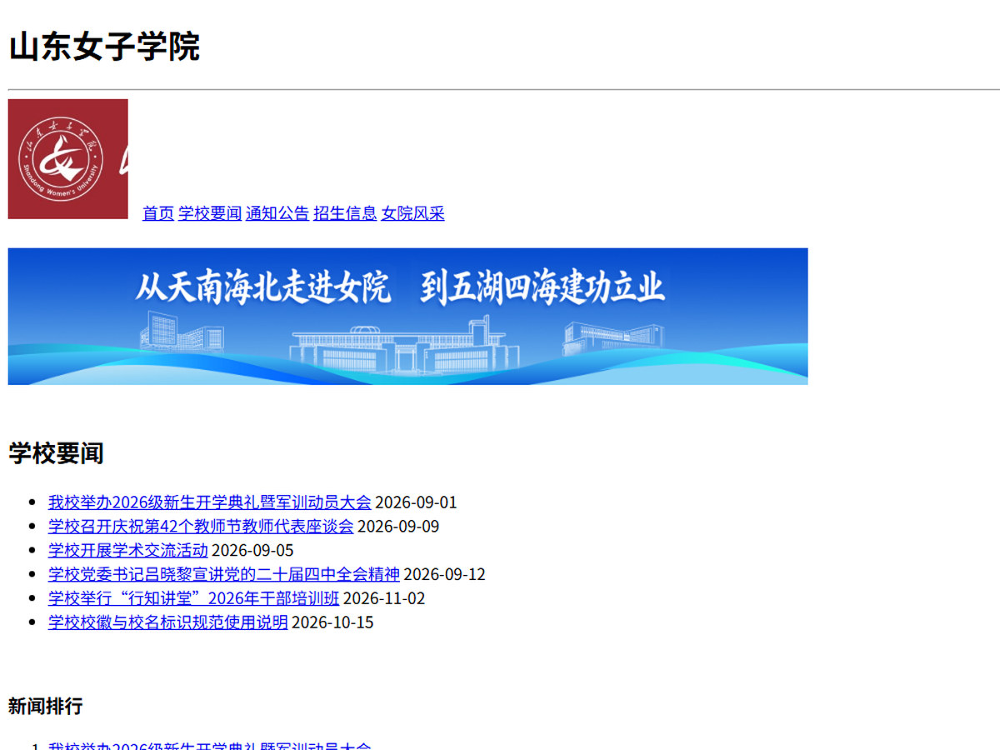
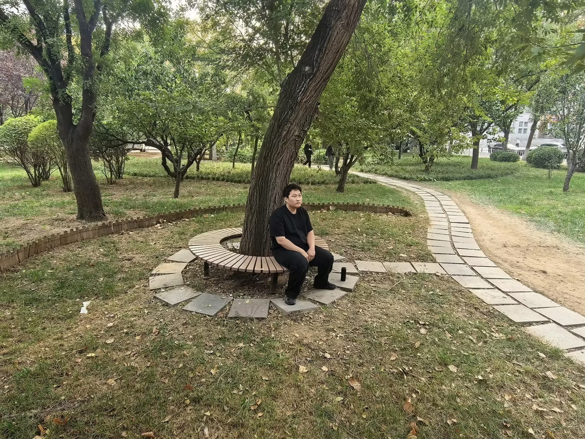

咖啡店三折页
深棕底配木质台面：封面用咖啡豆和拉花做质感，内页把冷热咖啡的价目排进同一套网格。
主修数字媒体技术，一半时间在画面里，一半时间在代码里。 平面方向练版式与配色，三维方向用 3ds Max 做建模与渲染； 前端方向从 HTML5 语义化标签、CSS 选择器与 Flex 布局一路写到 JavaScript 交互。
这个学期把课上学的知识串起来做过几个小项目：咖啡店的三折页、 学院官网的首页仿写、Unity 里的湖景小船。作品不复杂，但每一步都是自己动手做的。
摄影（喜欢拍城市里被光照亮的招牌字）、手冲咖啡、晚上跑步。 做设计时习惯先在草稿本上画三版布局，再挑一版进电脑 —— 这次的主页也是这样定下结构的。
先写对结构，再谈好看。语义化标签让页面「能被读懂」， Flex 让排版不再靠 float 硬撑，JavaScript 让页面真的能回应操作。

深棕底配木质台面：封面用咖啡豆和拉花做质感，内页把冷热咖啡的价目排进同一套网格。

工笔荷花、锦鲤和鸳鸯拼成一幅长卷：统一色温、压暗四周，给中间的题字留出位置。

蓝色渐变底加半透明描边面板；账号密码用图标代替文字标签，主按钮压在面板右下角。

Unity 3D 场景：WASD 控制帆船在湖面行驶，带浮动动画与活动半径限制，可切换昼夜与三种镜头。

按官网截图复刻：标题、导航、横幅、要闻列表、新闻排行、通知表格，只用了 HTML 标签和基础样式。

秋天的校园：环形长椅绕着老槐树，落叶和石板路把人往画面深处带。手机直出，只调了亮度。
如果你对我的作品有想法，或者想一起做点什么， 留下姓名和邮箱，我会尽快回复你。
姓名和邮箱是必填项：提交时 JavaScript 会先检查这两项， 为空会弹出提示并阻止提交。